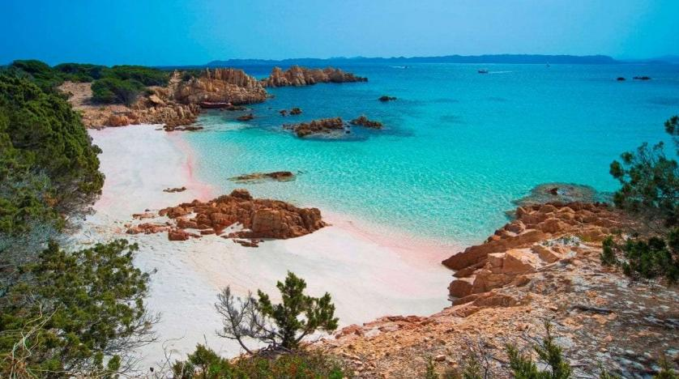

Sardinia
Sardinia is an island in the Mediterranean Sea and politically one of the 20 regions of Italy. It is the second-largest island in the Mediterranean Sea after Sicily, and is located west of the Italian Peninsula, north of Tunisia, and to the immediate south of the French island of Corsica.Back